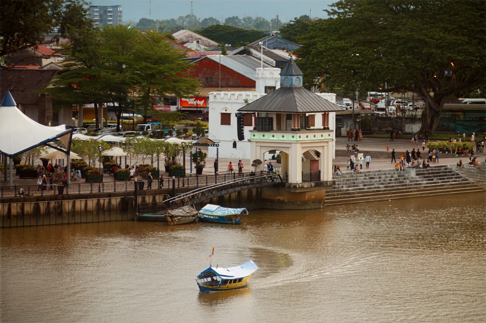
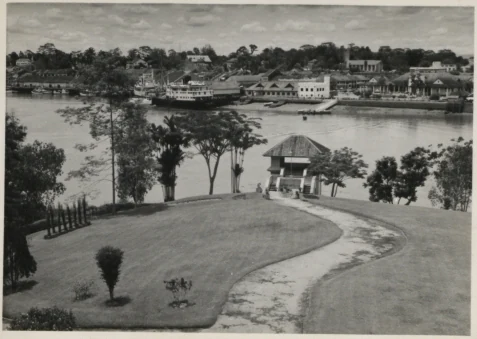

1841 to 1946The Brooke era
An adornment of Kuching's upper class
Keringkam is a traditional heritage embroidery of the Malay community of Sarawak, with its history traced to the Brooke era. Intricately handcrafted by generations of Malay women, it is distinguished by delicate patterns worked in shimmering gold or silver metallic thread.
Once regarded as an adornment of the upper social class, it was worn as a mark of elegance and prestige. In her 1913 memoir of life in Sarawak, Ranee Margaret Brooke recalled the women of Kuching wearing the tudung keringkam.

Kuching's waterfront on the Sarawak River

Across the river from the Astana tower, 1959. The National Archives UK, public domain